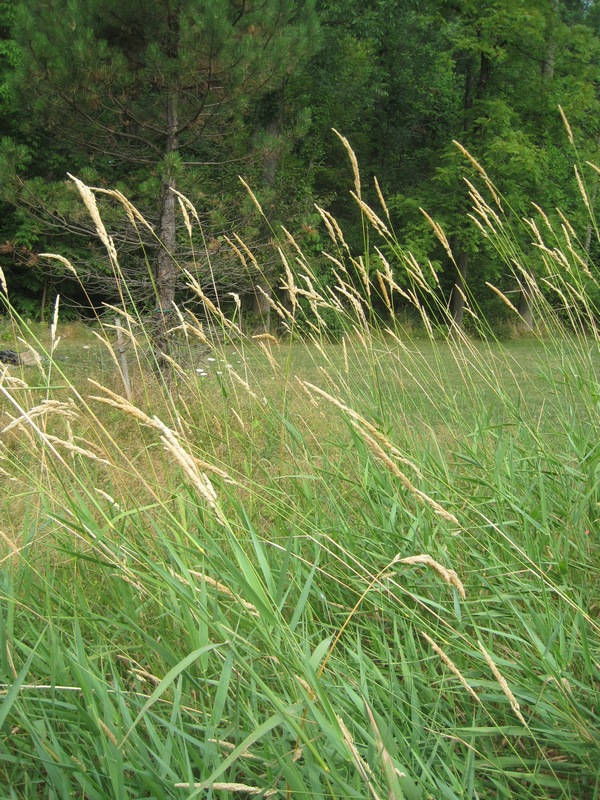
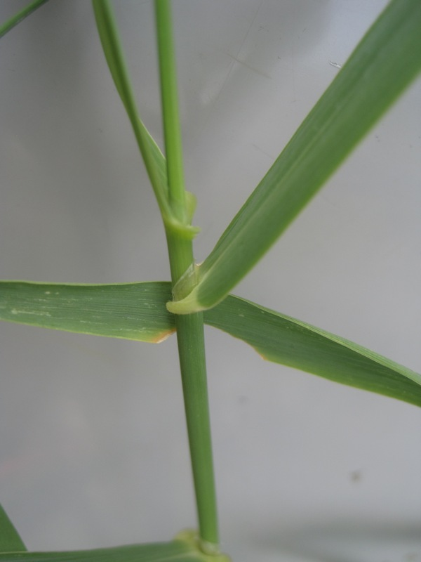
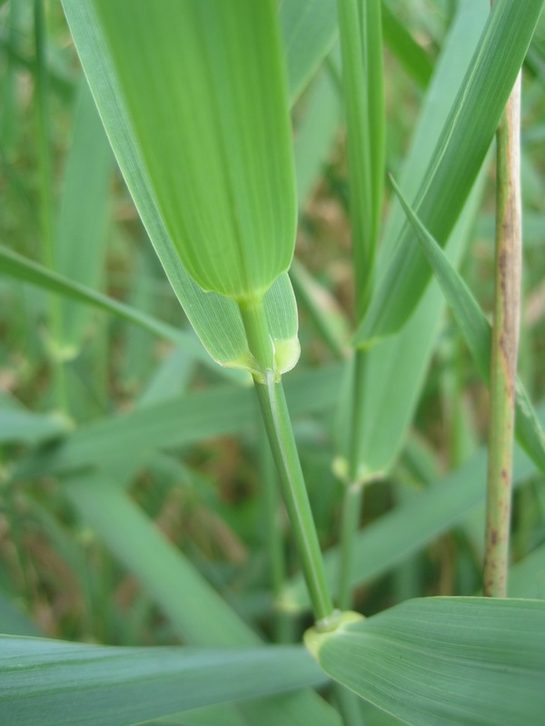
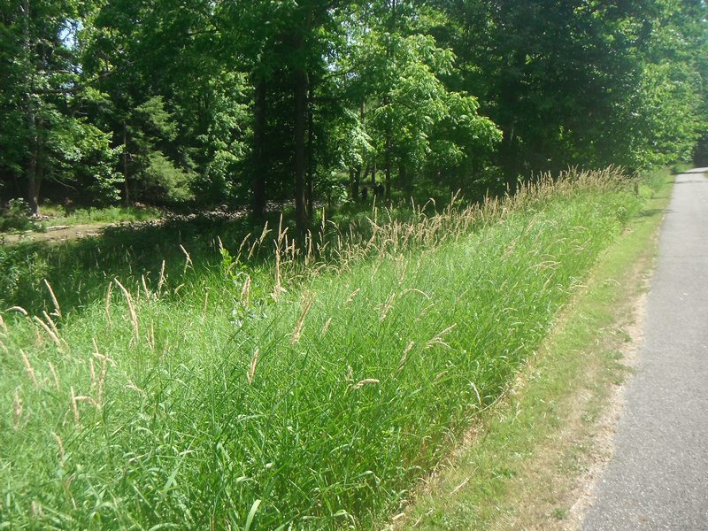
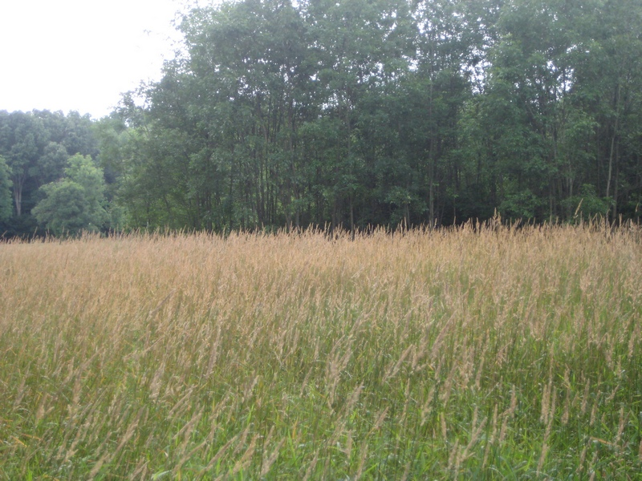

photo: Cleveland Metroparks
Reed Canary Grass (Phalaris arundinacea)
Cleveland Metroparks |
Cleveland Metroparks |
Cleveland Metroparks |
Cleveland Metroparks |
Cleveland Metroparks |
{kind=link}
{kind=link}
{kind=link}
{kind=link}
{kind=link}
Form:
Perennial, sod-forming, cool-season grass with erect, hairless stems that grow 2-6' tall.
Leaves:
Flat blades with rough texture on both surfaces, gradually tapering, 0.25-0.75" wide, and 3.5-10" long. Ligule is highly transparent.
Flowers:
Flower heads 3-6" long, and green to purple, changing to beige over time. Branches of inflorescence spreading when in bloom but held close to stem at maturity. Bloom mid- to late spring.
Fruits & Seeds:
Seeds are shiny, brown, and able to germinate immediately up maturation.
Roots:
Rhizomes with large numbers of dormant buds create a thick mat at or just below the soil surface.
Similar Species:
Bluejoint grass (Calamagrostis canadensis) native
Tier 4 - Widespread and Abundant
These are known problem species throughout Cleveland Metroparks and are currently under active management. Management plans are set using population extent and site-specific information.
Action: These plants should be recored as present or absent. These species are known to be widespread and abundant throughout Cleveland Metroparks.